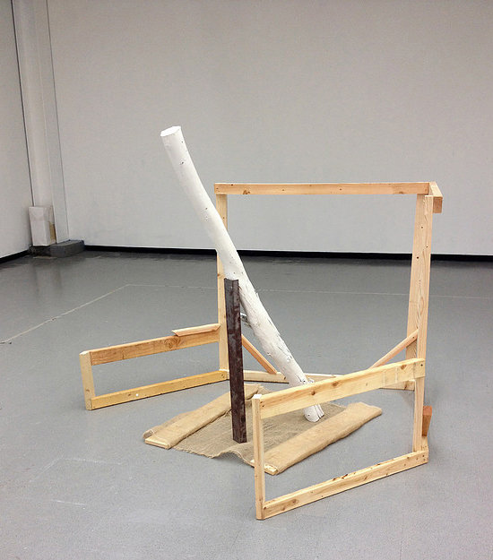
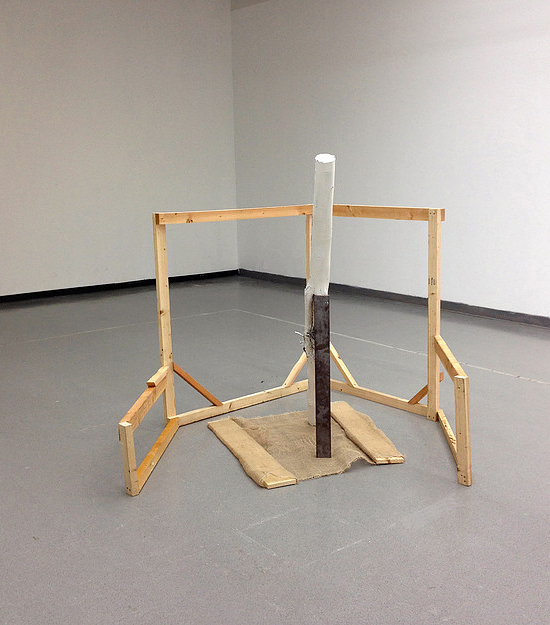

<section class="sculptureWork-sections m-scene"><div class="flex flex--center scene_element scene_element--fadein"><div id="wp-pushLeft" class="col-1b"><h4>Sculpture</h4><a href="vWork-ribOfAdam.html" class="wp-nextBtn">></a></div><div id="wp-pushLeft" class="col-1c"><h2>The Doryphoros</h2><p class="workDate smaller">2014</p></div><div id="wp-pushLeft" class="col-description"><p class="smaller">72" x 48" x 48"</p><p class="smaller">Acrylic Paint, Burlap, Cold Pressed 1/4" Steel Channel, Found Lumber, Gravity, Wood, Pressure, Tape, Weight</p><a href="sWork-Survey3.html" class="portfolio-prevBtn"><</a><a href="sWork-Excavation.html" class="portfolio-nextBtn">></a></div><div id="centerB" class="sculptureGallery pushUp"><ul class="rslides"><li></li><li></li><li></li></ul></div></div></section>